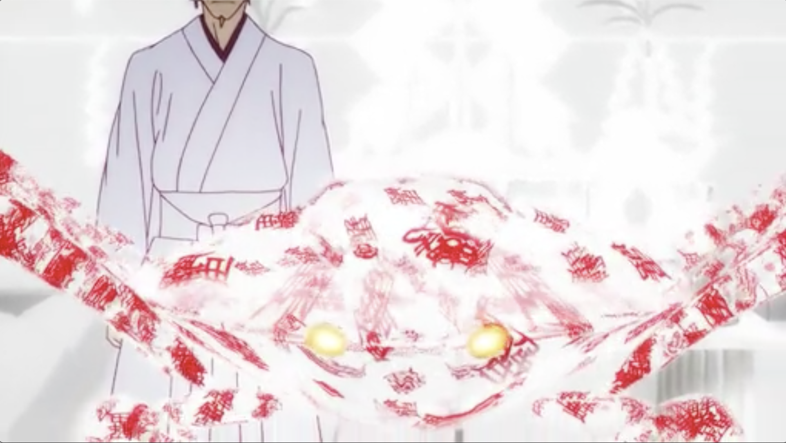
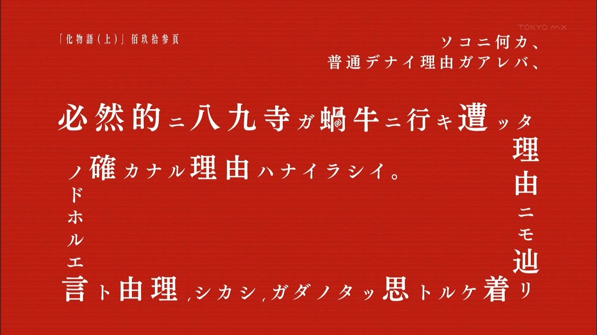
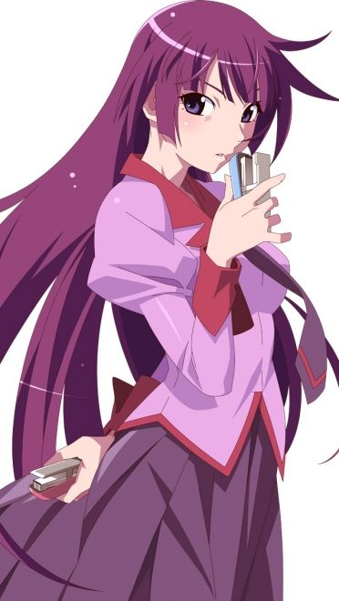
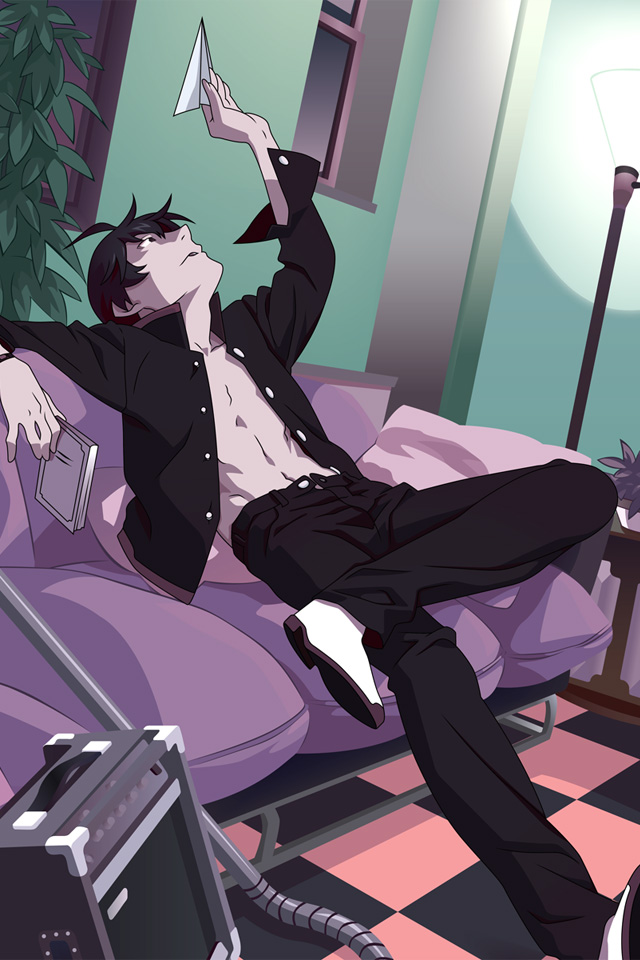
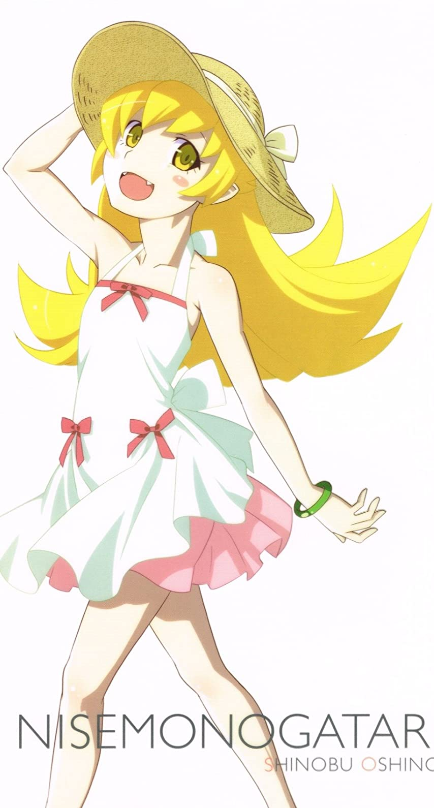
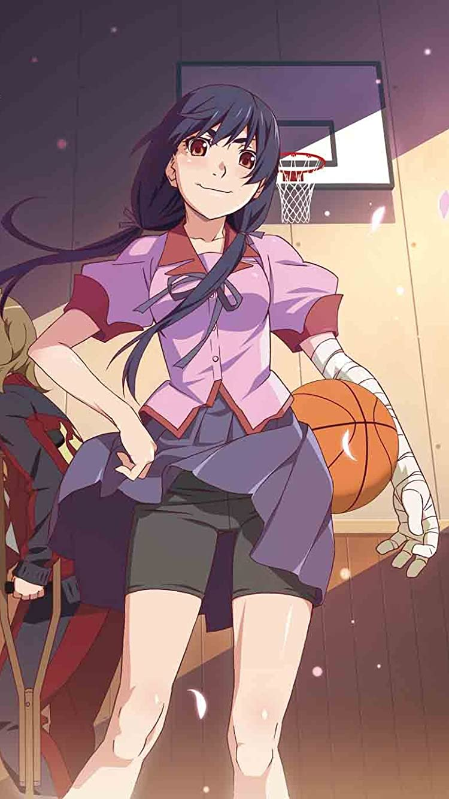
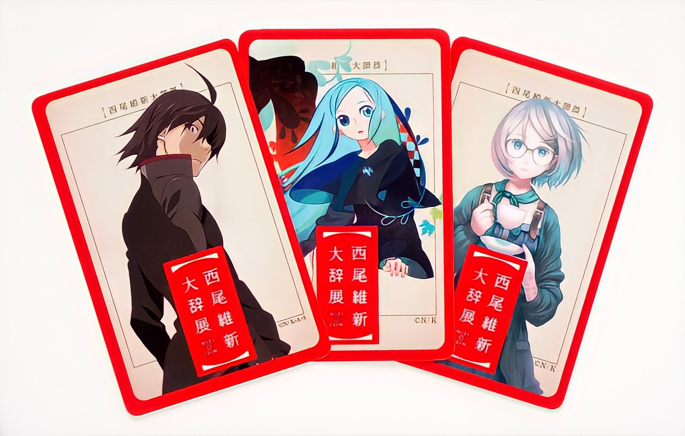

１番の魅力
超独特な演出がすごい!!




普通のアニメでは見られない表現方法で、アニメを魅せている。唐突に文字画面になったり、目のアップになったり、独特なアングルから映し出されることが多く、又背景も独特で、建物の形状や構造、デザインも特徴的になっている。手描きのアニメーションがメインだが、シーンによっては実写やCG、正字体による文章、文字そのものを記号的に使った演出も交えている。
〈物語〉シリーズは、『化物語』を始めとする西尾維新による小説シリーズ。「メディアミックス不可能」というコンセプトだったが、西尾の単独作品では初めてメディア化(アニメ化・ドラマCD化)が実現し、「西尾維新アニメプロジェクト」が動き出すことになる。
2009年のテレビアニメを最初にCD・ゲーム・劇場版アニメなど他媒体へも進出した。
「100パーセント趣味で書かれた小説です。」が売り文句で、西尾維新が得意とする言葉遊び・掛け合いが過剰かつ饒舌に盛られているコメディ小説シリーズである。




ギャグやパロディ、メタ視点を交えた登場人物同士の会話がとにかく面白い!!
物語シリーズのOPテーマは珍しいことに、各ストーリーのメインヒロインによって歌われています。ストーリーと合わせることでより名曲の良さを感じることができます。
| 順位 | 楽曲名 | 声優 |
|---|---|---|
| 1 | 白金ディスコ | 阿良々木月火(井口裕香) |
| 2 | 恋愛サーキュレーション | 千石撫子(花澤香菜) |
| 3 | Staple Stable | 戦場ヶ原ひたぎ(斎藤千和) |
| 4 | 帰り道 | 八九寺真宵(加藤英美里) |
| 5 | sugar sweet nightmare | 羽川翼(堀江由衣) |
| 6 | オレンジミント | 斧乃木余接(CV:早見沙織) |
| 7 | ambivalent world | 神原駿河(沢城みゆき) |


普通のアニメでは見られない表現方法で、アニメを魅せている。唐突に文字画面になったり、目のアップになったり、独特なアングルから映し出されることが多く、又背景も独特で、建物の形状や構造、デザインも特徴的になっている。手描きのアニメーションがメインだが、シーンによっては実写やCG、正字体による文章、文字そのものを記号的に使った演出も交えている。
